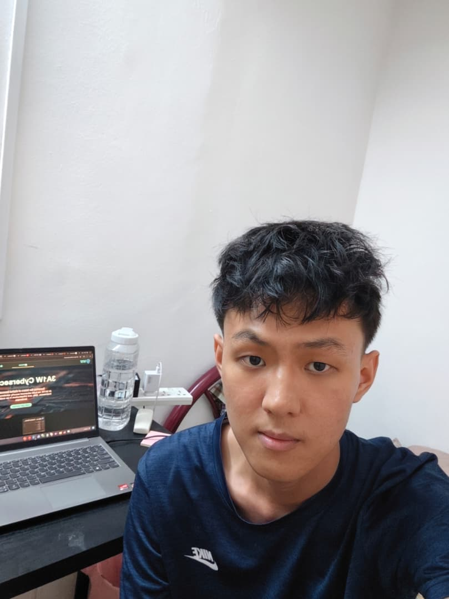

1. Nyan Phyo Aung
- Individual Task
- CSS — Responsible for all stylesheet design, visual layout, typography, colour themes, and responsive behaviour across the entire website.
- Shared Task
- Home Page — Co-developed the landing page structure, hero section, and introductory content with Wai Phyo Htet.
- Personal Quote
-
"Good CSS is invisible — you only notice it when it's missing."
Favourite Language:Chinese --- Name in Chinese: "CSS爱好者"
- First Programming Language Learned
- HTML — "HTML是我学的第一门编程语言" Translation: HTML was the first language I ever learned.